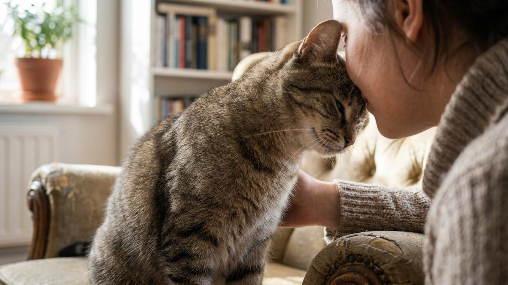

Кошка подходит, смотрит в глаза и — бум — лбом в ваш нос. Это не случайность и не попытка привлечь внимание к пустой миске. У жеста есть название — бантинг (bunting), и он говорит о вас кое-что важное. Разбираем механику, феромоны щёк и то, как правильно ответить, чтобы не прервать диалог.
🐾 Дневник здоровья питомца — в кармане
Вес, прививки, симптомы и напоминания в одном приложении. AnimaLife следит за здоровьем питомца вместо вас.
Этологи разделяют несколько форм мечения запахом у кошек. Бантинг — это именно удар или мягкое прижатие лбом и областью между ухом и глазом к объекту или живому существу. Трение щекой о ногу или угол дивана — тоже мечение, но другого рода: там задействованы жевательные феромоны, а цель — разметить территорию.
При бантинге кошка задействует железы вокруг глаз и на лбу — так называемые периорбитальные и лобные железы. Их секрет содержит индивидуальный химический профиль животного. Когда кошка бодает вас, она буквально наносит метку «свой» — на вас и на саму себя одновременно, создавая общий групповой запах.
В природе бантинг наблюдается только между животными, которые считают друг друга «своими» — однопомётниками, котятами и матерью, иногда дружественными котами из одной группы. То, что кошка делает это с человеком, означает: она включила вас в свою социальную группу.
У кошки несколько типов феромонных желёз. Щёчные железы (параоральные) выделяют смесь, которую ветеринарные этологи условно делят на фракции F2 и F3. Фракция F3 — та самая, которую воспроизводят синтетические феромоновые диффузоры типа Feliway. Она говорит кошке: «это место безопасно, здесь всё хорошо».
При бантинге с человеком кошка распределяет свой феромональный профиль на вашу одежду, волосы, лицо. С точки зрения кошки, вы начинаете «пахнуть правильно» — стаей, домом, безопасностью. Это не просто ласка. Это активное управление социальной средой с её стороны.
Исследование, опубликованное в журнале Applied Animal Behaviour Science, показало: кошки, живущие в многокошачьих домохозяйствах, чаще практикуют бантинг с людьми, чем с другими кошками. Это говорит о том, что жест направлен на формирование «химического единства» группы, а не просто на выражение симпатии.
Бантинг — не случайный жест. Обращайте внимание на ситуацию, в которой он возникает:
Когда одна кошка бодает другую, важно смотреть на направление. Обычно бантинг инициирует более уверенная или старшая кошка по отношению к младшей или менее статусной. Это не значит доминирование в жёстком смысле — скорее, мягкое включение в группу.
Если в вашем доме несколько кошек и одна никогда не бодает другую, это нормально: у некоторых животных этот жест просто менее выражен в поведенческом репертуаре. Отсутствие бантинга — не признак конфликта.
Тревожный сигнал — если кошка, которая раньше активно практиковала бантинг, резко перестала это делать. Такое изменение поведения стоит отметить: возможно, что-то в среде или самочувствии изменилось.
Кошка, которая трётся лбом о ножку стула или угол шкафа, занимается территориальным маркированием — но не агрессивным. Это создание «запаховой карты» дома, который она считает своим. Активный бантинг предметов при переезде или появлении нового мебели — нормальная реакция: кошка перезаписывает незнакомые запахи своими.
Если кошка бодает конкретный предмет, принесённый из другого места, — сумку, чемодан, пакет из магазина — это та же логика: объект «чужой», его нужно включить в систему.
🐾 Не уверены, что это опасно?
Опишите симптом в AnimaLife — AI-ветеринар за минуту подскажет, что в пределах нормы, а когда пора к врачу.
🐾 Понравился разбор?
Подпишитесь на канал — каждый день разбираем по одному тревожному симптому у кошек и собак: что в пределах нормы, а когда пора к врачу. Подпишитесь, чтобы не пропустить разбор, который может спасти здоровье вашего питомца.
Кошки, которые активно практиковали бантинг и внезапно перестали, могут сигнализировать о стрессе, дискомфорте или изменении в самочувствии. Стресс-факторы: новый питомец, переезд, конфликт с другой кошкой, шум ремонта. Если поведенческие изменения сохраняются более двух недель без очевидной причины — стоит проконсультироваться с ветеринаром или поведенческим специалистом.
Бантинг — один из самых прямых и тёплых жестов в кошачьей коммуникации. Если ваша кошка его практикует, вы вошли в её внутренний круг. Это не мелочь.